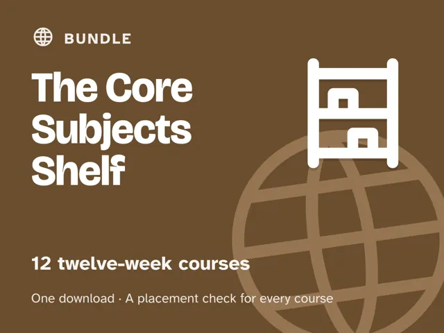

The Core Subjects Shelf
Every core subject, one method. Twelve complete 12-week guides covering math, algebra, geometry, reading, early reading, writing, grammar, life science, chemistry, physics, history, and coding, each with a free placement check that finds the right week to start. You lead; the AI is the tutor. No expertise needed in any subject.
What's in the bundle
| Course | What it teaches |
|---|---|
| Coding as Literacy | First line of code to a project they demo (ages about 10 to 16) |
| Read to Understand | Inference, main idea, and summarizing (ages 8 to 12) |
| Math That Makes Sense | Rebuilds math confidence by fixing the gaps that compound (ages about 9 to 14) |
| Algebra Made Clear | Pre-algebra to early Algebra 1, solving equations (ages 12 to 16) |
| Write Like You Mean It | Real writing with AI as editor, never ghostwriter (ages about 10 to 16) |
| Geometry You Can See | Angles, area, triangles, circles and volume, seen not memorized (ages about 12 to 16) |
| Grammar and Spelling That Stick | Punctuation, spelling patterns, and editing (ages 8 to 12) |
| Learning to Read | Phonics, sight words, and early fluency (ages about 5 to 8) |
| Life Science | Cells, body systems, plants, and ecosystems (ages about 10 to 14) |
| Intro to Chemistry | Atoms, reactions, acids and bases (ages about 11 to 15) |
| Physics: How Things Move | Forces, motion, energy, and electricity (ages about 11 to 15) |
| History Is an Argument | Primary sources and evidence instead of memorized dates (ages about 11 to 17) |
Each course is a deep, digital guide: 12 ready-to-run 60-minute weekly sessions, each with a plain-language concept, a concrete worked example, a minute-by-minute session plan with the AI-tutor prompts built in, a "show me" checkpoint, common mistakes to watch for, and practice. Every course opens with a five-minute "Never used an AI chat assistant? Start here" walkthrough and four rescue prompts for when a session goes sideways. No paid AI plan needed.
Why the bundle
- Save about 72%. All 12 courses together cost far less than buying them one at a time.
- One method across every course. Learn the sit-beside-and-lead rhythm once and use it everywhere. The adult stays the leader; the AI is the tutor.
- A placement check for each course. A 15-minute AI chat scores where your learner stands and names the week to start at, so nobody repeats what they already know.
Who it's for
Homeschool families who want a full year of core subjects (and then some) taught with an AI tutor, without being an expert in any of them, even if you've never used an AI chat assistant.
Why this instead of a free chatbot
A chatbot answers; it doesn't teach. These courses ship the curriculum, the guardrails, and the checkpoints a chatbot lacks: Socratic prompts that make the tutor ask before it tells, rules that stop it handing over answers, and "show me" moments that prove the learning stuck.
FAQ
- Do I need to know these subjects? No. You lead; the tutor teaches. Every session comes with the exact prompt to start it.
- Which AI does it use? Any modern AI chat assistant: ChatGPT, Claude, Copilot, or Gemini. Free versions are enough.
- Is my child's data collected? No. These are digital guides sold to you, the adult. No logins and no child accounts; you start and supervise every session under your own account.
- Can I start with one course? Yes. Run one course at a time, or two side by side.
- How is it delivered? One instant download (a zip file) with a folder per course: the guide as a PDF, a web page, and an AI-ready copy, plus each course's placement check.